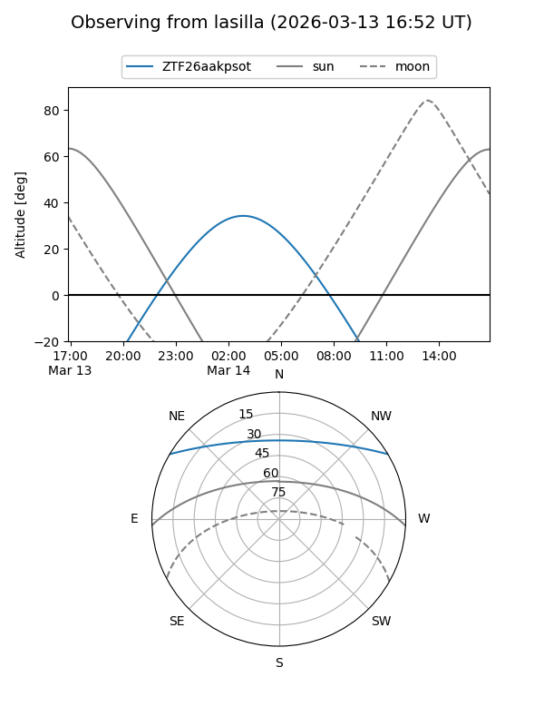
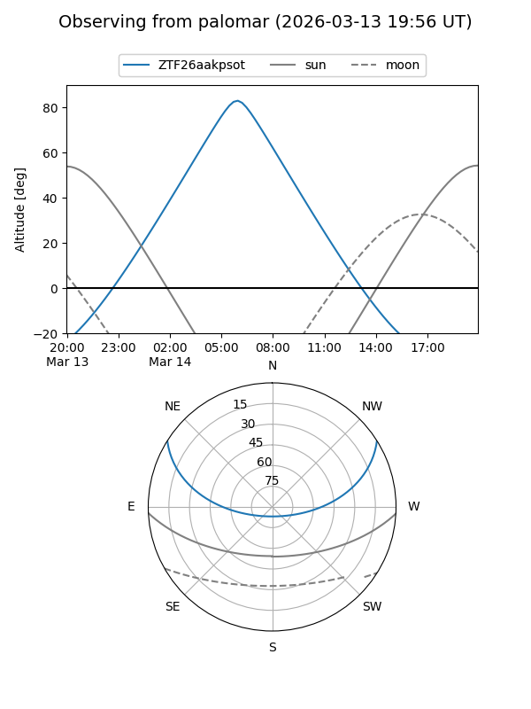

ZTF26aakpsot
Target ZTF26aakpsot at 2026-03-14 08:34
Aliases and brokers:
FINK: link
Lasair: link
ALeRCE: link
alt names
ZTF26aakpsot (ztf,fink_ztf)
Coordinates:
equatorial (ra, dec) = 143.2790,+26.56952
equatorial (HMS+DMS) = 09:33:06.96,+26:34:10.27
galactic (l, b) = (201.8272,+46.05968)
Flags:
Photometry:
last ztfg=19.95
1 ztfg detections
Lightcurve
Visibility


Additional plots